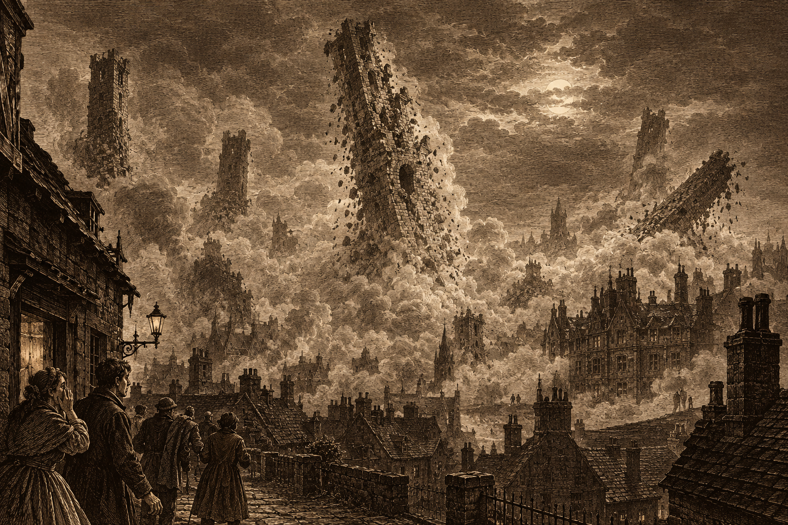
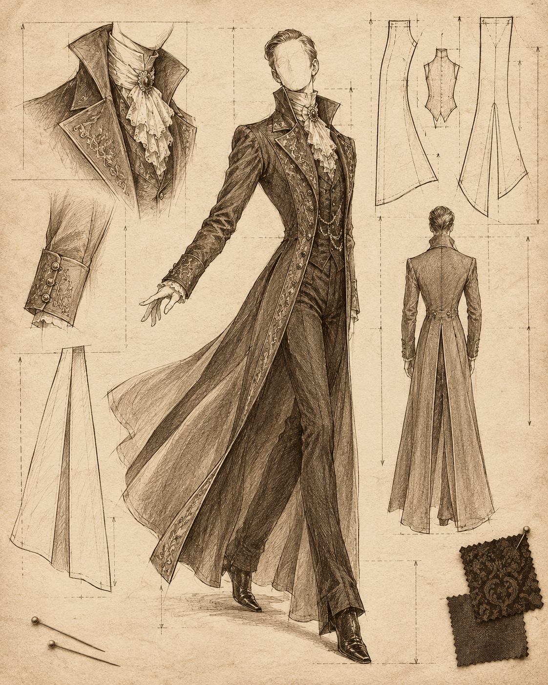

Six Towers, as the last of them fell.
Some months ago I wrote in these pages about the six old towers that give Six Towers its name: towers nobody remembers building, whose purpose nobody could tell me. I can no longer tell you where they stand. They do not.
Late in the night, the first of them came down. Within the hour all six had fallen, one after another, “like somebody snuffing candles,” as a lamplighter put it to me. The district woke to a roar and then to dust, dust so thick that for a full day the street lamps could not be seen from across the road.
And yet, by some mercy, nobody was killed. The towers had stood empty for as long as anyone remembers, and all but one fell inward, as if they had been told to. The one that did not came down across the old Scurlock manor (see below). A carter’s horse bolted, a few windows broke, a few people were bruised in the running. As disasters go, it was a tidy one. The district will be clearing stone for a year, and that is all.
But that is not how the city is taking it. Ask around and you will hear one word more than any other: omen. Something old has fallen, and folk who never gave the towers a second thought are certain it heralds something worse to come, though nobody can say what.
Some swear they saw lights at the tops of the towers before the fall, and figures on a rooftop, struggling. I set these down because they were told to me.
A whisper of my acquaintance in Nightmarket swears that the moment the first tower fell, the whole city went silent, like a gasp. For that moment, she says, she could not hear so much as the murmur of a ghost. “For a moment there wasn’t a ghost in Doskvol brave enough to breathe.”
Others heard something. A night-soil man in Charterhall says that under the roar of the stone there was laughter, raspy and dry as dust, “worse than anything I’ve heard in this city, and I’ve heard plenty.” A fisherman on the north quay heard a roar of his own: distant, muffled, and from somewhere beneath the bay.
The Ministry of Preservation calls the cause structural failure, and is seeking the towers’ engineer, Mr. Dirmot Eckardd, who has not been seen since.
For now, nothing else in the city seems broken. The lamps are lit, the trains run, the bells ring. Whether it stays that way remains to be seen.
Last month I reported that House Scurlock had returned to society. This month, it seems, society has decided to dress as House Scurlock.
The coat is the thing: cut close through the chest and waist like a concert pianist’s tails, high and stiff at the collar, then falling straight to the floor in long split tails that whisper on the parquet. Three Brightstone tailors tell me they have more orders than they can cut. One has stopped taking them.
Nor is it only coats. High lace cravats are back, and jeweled pins, and watch chains worn in loops. Young gentlemen have been seen practising standing very still in doorways. The older families are appalled, which is, of course, half the appeal.
Lord Scurlock himself has not been seen in society since the Dalmorrian party, and did not answer my card. His admirers, who have taken to calling themselves Scurlings, now have real cause to fret: the old Scurlock manor in Six Towers stood in the path of a falling tower and lies half buried in its stone. No bodies have been brought out of the wreckage. The Scurlings have decided he was away on business. Brightstone has decided the mystery is the most fashionable thing about him.

The Scurlock coat, from a Brightstone tailor’s drawing board.